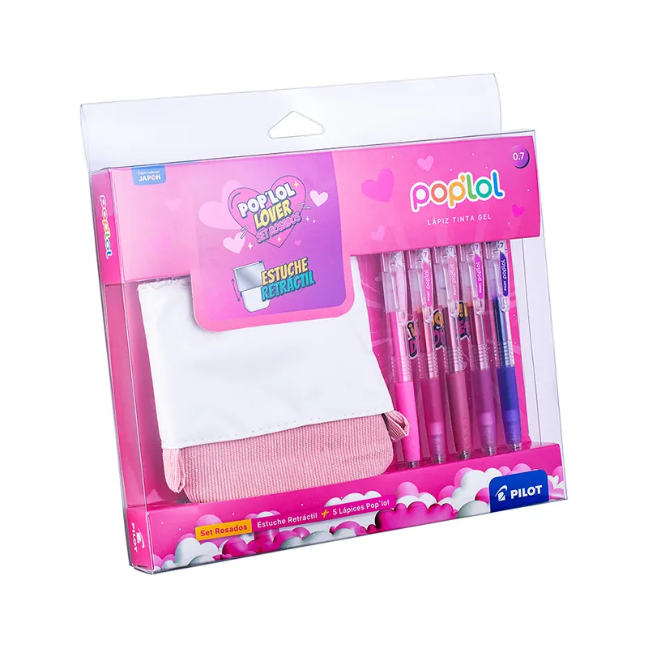

Pop'Lol
Set Lápiz Gel POPLOL 0.7 5u c/Estuche Rosado
- Código BLPL729
- Set o kit
Set Lápiz Gel POPLOL 0.7 5u c/Estuche Rosado PILOT
Descripción
Escribe, crea y destaca con el set de lápices gel POPLOL de PILOT. Incluye 5 lápices de gel de 0,7 mm con tinta suave y colores vibrantes, acompañados de un práctico estuche rosado ideal para mantener tus útiles siempre organizados. Perfecto para clases, oficina, agendas, diarios y manualidades. Características: Set de 5 lápices gel POPLOL Punta 0,7 mm de escritura suave y precisa Colores intensos y secado rápido. Incluye estuche rosado reutilizable Ideal para estudio, oficina y uso creativo. Marca: PILOT Contenido: 5 unidades + estuche retráctil Color estuche: Rosado Código: BLPL729
Ficha técnica
Ficha técnica: por solicitar. Avísanos al cotizar.
Más de esta familia: Pop'Lol